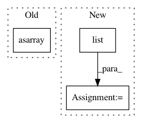

26c72cf3ad3b0b7e0569f0f11e970bc603c98027,experiments/complete_faces.py,ResultsTable,__init__,#ResultsTable#Any#Any#Any#Any#Any#Any#,44
Before Change
dirname="face_images",
scale_rows=False,
center_rows=False):
self.images = np.asarray(images, order="C").astype("float32")
self.image_shape = images[0].shape
self.width, self.height = self.image_shape[:2]
self.color = (len(self.image_shape) == 3) and (self.image_shape[2] == 3)
After Change
scale_rows=False,
center_rows=False):
self.images_dict = images_dict
self.labels = list(sorted(images_dict.keys()))
self.images_array = np.array(
[images_dict[k] for k in self.labels]).astype("float32")
self.image_shape = self.images_array[0].shape
self.width, self.height = self.image_shape[:2]
self.color = (len(self.image_shape) == 3) and (self.image_shape[2] == 3)
if self.color:
In pattern: SUPERPATTERN
Frequency: 3
Non-data size: 3
Instances
Project Name: iskandr/fancyimpute
Commit Name: 26c72cf3ad3b0b7e0569f0f11e970bc603c98027
Time: 2016-01-10
Author: alex.rubinsteyn@gmail.com
File Name: experiments/complete_faces.py
Class Name: ResultsTable
Method Name: __init__
Project Name: scikit-multiflow/scikit-multiflow
Commit Name: a8d354aa3f1d796ebfcf41586af1eb925f229ecc
Time: 2020-04-01
Author: 17923265+jacobmontiel@users.noreply.github.com
File Name: src/skmultiflow/lazy/knn_adwin.py
Class Name: KNNADWINClassifier
Method Name: partial_fit
Project Name: ellisdg/3DUnetCNN
Commit Name: e6a8a482f15803b24fc4bda6e2a0bd001ca77c87
Time: 2017-04-07
Author: david.ellis@unmc.edu
File Name: data.py
Class Name:
Method Name: read_subject_folder